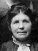
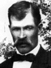
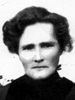

Hans and Ane Nielsen Sorensen Family Group
Home
Histories
Charts
Photos
Maps
Restricted
News
Info
Contact
 symbol is a link to a history,
symbol is a link to a history,  a source, and the chart
a source, and the chart  symbol is a link to a family group chart.)
symbol is a link to a family group chart.)|
Soren Nielsen and Karen Jorgensdatter |
----> |   |
Hans Sorensen Born 2 Oct 1825 Kragerup, Ørslev, Holbaek, Denmark Died 6 Apr 1893 Aurora, Sevier, Utah, USA Hans life timeline Ane Nielsen Born 24 Dec 1822 Munke-Bjaergby, Soro, Denmark Died 16 Mar 1903 Aurora, Sevier, Utah, USA Married 9 Sep. 1848, Tersløse, Holbaek, Denmark Hans also married Mathilda Torgersen Evensen 27 May 1880 Endowment House, Salt Lake City, UT | |
|
Niels Nielsen and Ane Marie Olsen |
  |
Soren Peter Sorensen Born 16 Apr 1849 Terslose, Holbaek, Denmark Died 31 Jan 1929 Vejlby, Aarhus, Denmark Married Ane Christine Petersen 3 Mar 1872
The 1st child of Hans Sorensen and Ane Nielsen |
|
Methe Marie Sorensen Born 4 Oct 1851 Ruds-Vedby, Hlbk, Denmark Died 3 Jan 1883 Koosharem, Sevier, Utah, USA Married Peter Christensen 2 Jan 1871 Endowment House, Salt Lake City, Sl, UT
The 2nd child of Hans Sorensen and Ane Nielsen |
 2 2 |
Anders Wilhelm Sorensen Born 9 Nov 1854 Hallenslev, (Torpegavn), Holback, Denmark Died 28 Dec 1923 Glenwood, Sevier, Utah, USA Married Mary Kirstine Steffensen 11 Apr 1877 St. George, Washington, Utah, USA
Married Mary Josephine Christiansen 22 Jun 1893 Manti, Sanpete, Utah, USA
The 3rd child of Hans Sorensen and Ane Nielsen |
 |
Caroline Sophia Sorensen Born 30 Apr 1858 Hallenslev, Torpegavn, Holbek, Denmark Died 2 May 1928 Venice, Sevier, Utah.USA Married Archibald Waller Overton Buchanan 27 Sep 1875 Salt Lake City, Salt Lake, Utah, USA
The 4th child of Hans Sorensen and Ane Nielsen |
|  | Parley Peter Sorensen Born 11 Jul 1862 Maarslet, Aarhus, Denmark Died 8 Nov 1927 Aurora, Sevier, Utah, USA Married Emma Christina Helquist 20 Jan 1887 Koosharem, Sevier, Utah, USA
The 5th child of Hans Sorensen and Ane Nielsen |